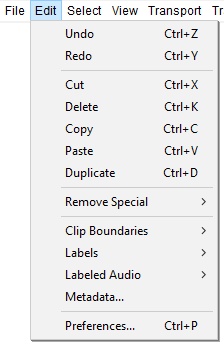

Edit Menu
There are many commands available from this menu so some commands are grouped into submenus.
- Click, or hover, on any menu item in the image to read about that command. Skip the image
- 
Undo Ctrl + Z
Undoes the last editing operation you performed to your project. You can undo as many times as you want, all the way back to when you opened the window. To undo many operations, select History... from the View Menu. The name of this menu item will change to reflect what will be undone; if you just recorded some audio, the menu item name will be Undo Record.
Redo Ctrl + Y
Redoes any editing operations that were just undone. After you perform a new editing operation, you can no longer redo the operations that were undone.
Cut Ctrl + X
Removes the selected audio data and/or labels and places these on the Audacity clipboard. Audio or labels after the selection move leftwards.
Delete Ctrl + K
Similar to Cut, but removes the audio data and/or labels that are currently selected without copying them to the Audacity clipboard.
Copy Ctrl + C
Copies the selected audio data to the Audacity clipboard without removing it from the project.
Paste Ctrl + V
Pastes audio which has been cut or copied to the Audacity clipboard, either inserting it into the selected track(s) at the cursor point, or replacing the current selection region(s).
Duplicate Ctrl + D
Creates a new track containing only the current selection as a new clip.
Remove Special
The Remove Special submenu has commands for more "advanced" removal of audio and labels:
- Split Cut and Split Delete are a "special" cut or delete which make the audio or labels to right of the selection stay in current position instead of moving leftwards.
- Silence Audio replaces the current selection with silence.
- Trim Audio removes all audio from the current clip except the selected part, creating its own clip from the remaining, selected, audio.
Clip Boundaries
The Clip Boundaries submenu has commands to create or remove separate clips in the audio track. A clip inside an audio track is a separate section of that track which has been split so that it can be manipulated somewhat independently of the other clips in the track.
Labels
The Labels submenu has commands that enable you to add and edit labels.
This command invokes the Labels Editor which lets you add or remove Label Tracks and edit their labels entirely using the keyboard, so is particularly useful for visually impaired users.
It brings up a dialog box showing all of your labels in a keyboard-accessible tabular view. Handy buttons in the dialog let you insert or delete a label, or import and export labels to a file. See Labels Editor for more details.
See Edit Menu: Labels for details of this sub-menu.
Labeled Audio
The Labeled Audio submenu has commands that offer a time saving way of performing Edit Menu operations on the audio of multiple fully selected range labels.
The commands apply to all labeled audio regions that are fully inside a selection drawn in a label track. The selection may extend beyond the label boundaries, but audio that is not labeled and audio whose region label is only partly within the selection will not be acted on.
If none of the audio tracks are included in the selection, the Labeled Audio commands apply to all audio tracks in the project. However if you include only certain audio tracks in the selection, the Labeled Audio commands will only affect those selected audio tracks.
See Edit Menu: Labeled Audio for details of this sub-menu.
Metadata...
Use this function to edit the metadata tags that will be applied to exported files.
Preferences... Ctrl + P
Displays the Preferences dialog. Preferences enable you change most of the default behaviors and settings of Audacity.